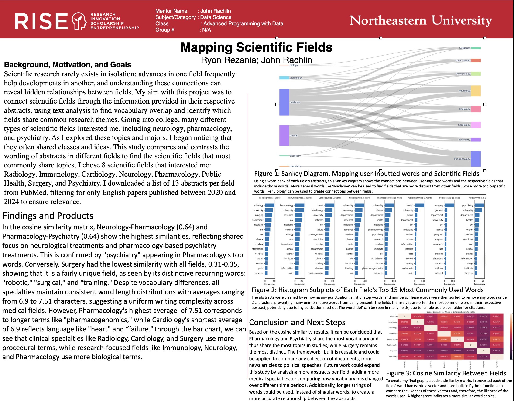
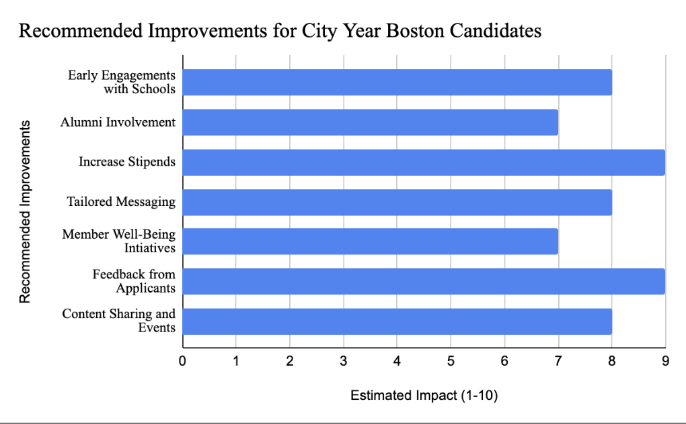
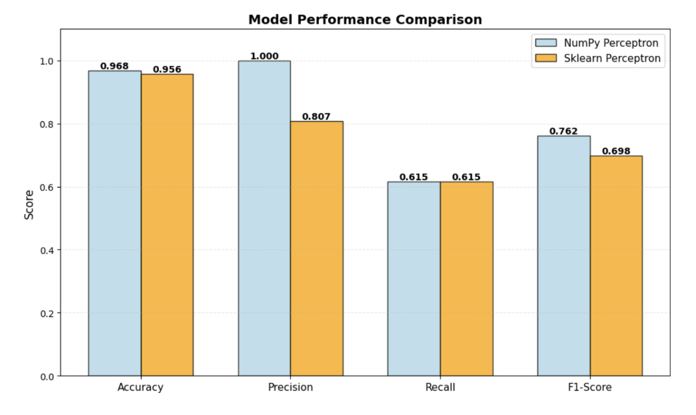

For this project, I built a reusable Python text analysis framework applied to medical abstracts spanning eight different specialties. Using NLP techniques, cosine similarity, and Sankey diagrams, the framework identified thematic relationships and knowledge flow across medical fields. The project emphasized modularity and reproducibility, designed so that the pipeline could be dropped onto any text dataset with minimal reconfiguration.

During my time at City Year, I developed machine learning models to predict employee retention and identify at-risk staff before attrition occurred. Using Random Forest and Logistic Regression in Python, I engineered features from organizational data and compared model performance to maximize predictive accuracy. The insights generated were directly actionable, giving leadership a data-driven foundation for intervention strategies.

This project tackled a machine learning classification problem centered on identifying superfoods from nutritional data. I compared Perceptron and K-Nearest Neighbors models, with the Perceptron ultimately achieving 96.8% accuracy. A key focus of the project was handling class imbalance in the dataset, ensuring the model performed reliably across both majority and minority classes rather than simply optimizing for overall accuracy.
